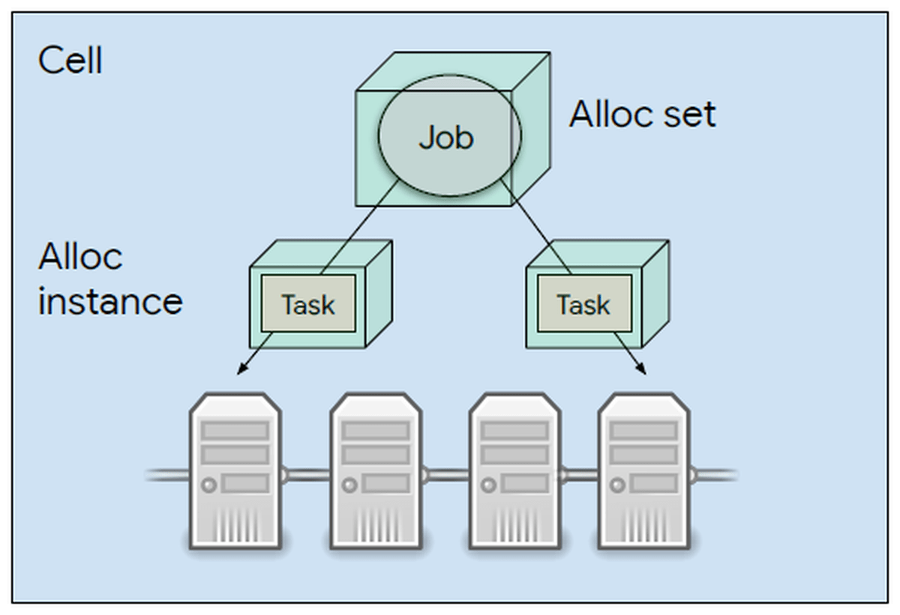
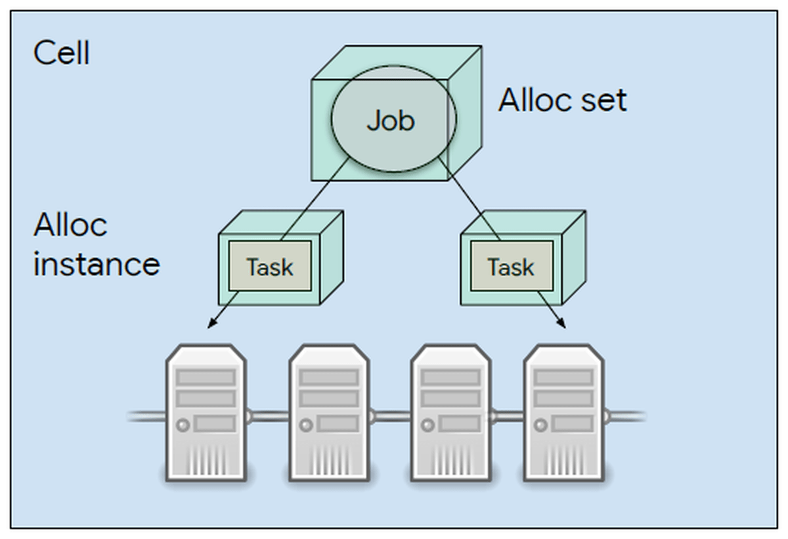

This was the main project I worked on during my internship with Google in the summer of 2022.
It is a big data pipeline that periodically backfills information in YouTube TV's rewards system. It reads through a data dump of subscribers,
detects missing rewards, and grants those missing rewards.
New Skills:
I Learned how to manage big data using MapReduce technology. I also learned how to write an original design document for a backend system and screen it across multiple teams.
Sharpened Skills:
I underwent code reviews from many googlers across two different teams. This helped me pick up many good programming practices, specifically in C++. I also Gained new experiences with cluster management technology. I had used Kubernetes to manage multiple services before, but my time at Google gave me experience with other similar technologies. Lastly, I used SQL to help identify target data within Google's databases and create testing input for the pipeline.

 
